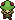
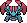

頭錘Headbutt
- 屬性
- 一般
- 分類
- 物理
- 威力
- 70
- 命中
- 100%
- SP
- 25
- 冷卻
- 1.8 秒（物理組）
- 範圍
- 近戰
- 距離
- 1 格
- 段數
- 1
- 前搖
- 0.6 秒
- 接觸
- 是
招式分類跟隨招式的 屬性 （第三世代規則，與火紅／葉綠相同）：火、水、草、電、超能力、冰、龍、惡屬性招式一律是特殊招式；其他屬性是物理招式（例外：分擔痛楚）。因此暗影球是物理招式，攀瀑是特殊招式。這是刻意設計，不是錯誤。
即時戰鬥效果
有 30% 機率使對手畏縮。
命中使用者正前方的一個目標。
升級時學會
 呆呆獸 Lv 29
呆呆獸 Lv 29 呆殼獸 Lv 29
呆殼獸 Lv 29 小海獅 Lv 1
小海獅 Lv 1 白海獅 Lv 1
白海獅 Lv 1 催眠貘 Lv 17
催眠貘 Lv 17 引夢貘人 Lv 17
引夢貘人 Lv 17 卡拉卡拉 Lv 13
卡拉卡拉 Lv 13 嘎啦嘎啦 Lv 1嘎啦嘎啦 Lv 13
嘎啦嘎啦 Lv 1嘎啦嘎啦 Lv 13 卡比獸 Lv 17
卡比獸 Lv 17 呆呆王 Lv 29
呆呆王 Lv 29 蛇紋熊 Lv 9
蛇紋熊 Lv 9 直衝熊 Lv 1直衝熊 Lv 9
直衝熊 Lv 1直衝熊 Lv 9 蘑蘑菇 Lv 22
蘑蘑菇 Lv 22
斗笠菇 Lv 22 可可多拉 Lv 10
可可多拉 Lv 10 可多拉 Lv 1可多拉 Lv 10
可多拉 Lv 1可多拉 Lv 10 波士可多拉 Lv 1波士可多拉 Lv 10
波士可多拉 Lv 1波士可多拉 Lv 10 雪童子 Lv 19冰鬼護 Lv 19
雪童子 Lv 19冰鬼護 Lv 19 寶貝龍 Lv 17
寶貝龍 Lv 17 甲殼龍 Lv 1甲殼龍 Lv 17
甲殼龍 Lv 1甲殼龍 Lv 17
暴飛龍 Lv 1暴飛龍 Lv 17 大牙狸 Lv 17
大牙狸 Lv 17 大尾狸 Lv 18
大尾狸 Lv 18 頭蓋龍 Lv 1
頭蓋龍 Lv 1 戰槌龍 Lv 1
戰槌龍 Lv 1 小球飛魚 Lv 13
小球飛魚 Lv 13招式光碟
一般屬性招式光碟 ・稀有（每打倒一隻該屬性寶可夢 0.3%，由 20 個招式分配）
可以教會 469 隻寶可夢：遊戲中的每一隻都能學（一般屬性招式不限屬性）。